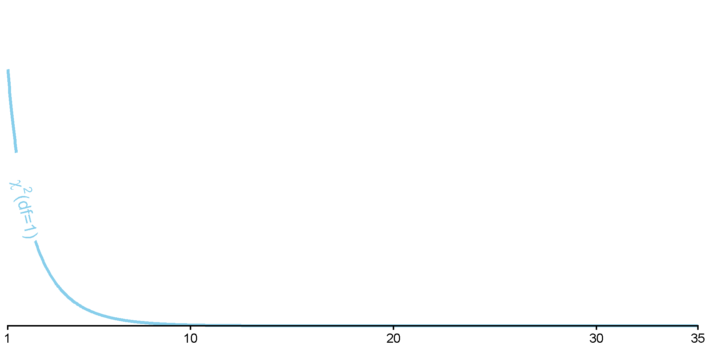
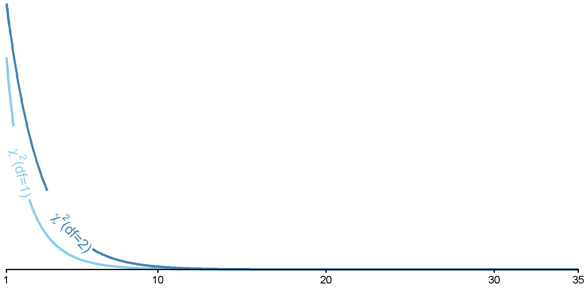
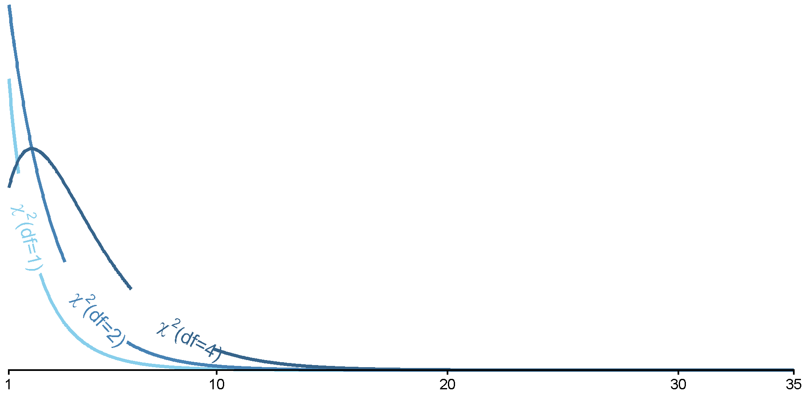
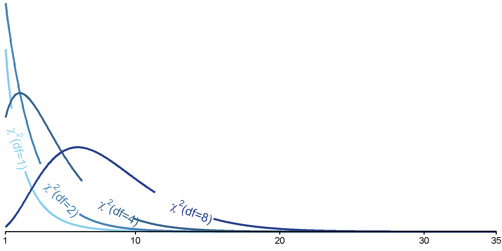
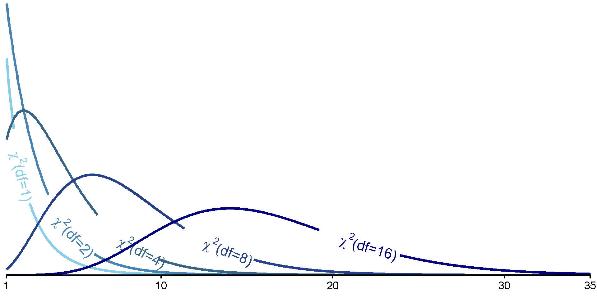

qchisq(.95, 1)[1] 3.841459qchisq(.05, 1, lower.tail = F)[1] 3.841459PSYC 6019-A01 / PSYC 6022-A01
2025-09-18 | Lab 4
Testing inferences about proportions
○ Involve categorical variables
Comparing observed frequencies (counts) to some expected (null hypothesis) frequencies
\(\chi^2\) Test of Goodness of Fit: expected frequencies are set by researcher (e.g., null hypothesis is equal frequencies across all groups)
\(\chi^2\) Test of Independence: expected frequencies are those implied by independence
Instead of a continuous variable, our outcome is a count
Continuous
Height
Petal length
Test score
Counts
Coin flip being heads
Number of pets
Goals scored
Only integers
Do the observed frequencies of a categorical variable differ from what expected a priori?
Typically, this expectation is equal occurrence across groups (but doesn’t have to be).
If equal occurrence, what would be our expected frequencies?
100 coin flips
| Heads | Tails |
|---|---|
| 50 | 50 |
Favorite primary color of 33 students
| Red | Blue | Yellow |
|---|---|---|
| 11 | 11 | 11 |
Can also hypothesize proportions and convert to frequencies once you have a sample size.
\(H_0\): Observed data match the expected frequencies for the population
\(H_1\): Observed data do not match the expected frequencies for the population
○ Observed frequency is significantly different than expected
\(H_0\): \(\pi_j = \pi_{j_0}\) for all categories \(j\) (i.e., difference for all categories is 0), where
\(\pi_j\) = observed proportion
\(\pi_{j_0}\) = expected proportion
\(H_1\): \(\pi_j \neq \pi_{j_0}\) for any category \(j\)
\[ \chi^2 = \sum_{j=1}^{J} \frac{(O_j – N\pi_{j_0})^2}{N\pi_{j_0}} = \sum_{j=1}^{J} \frac{(O_j – E_j)^2}{E_j} \]
where
\(O_j\) = observed frequency
\(N\) = total sample size
\(E_j\) = expected frequency
\(j\) = individual category out of \(J\) total categories
The sum of the squared differences between the observed and expected frequencies, divided by the expected frequency, for each group.
\(\text{df} = J - 1\), where
\(J\) = number of categories
Use to identify critical \(\chi^2\) value from \(\chi^2\) table, R, etc.
For \(\chi^2\), as \(\text{df}\) increases, so does the critical-\(\chi^2\) value (at same \(\alpha\))
Only ever a one-tailed test! For the upper end of the distribution.





Cutoff for test of heads vs. tails
\(J =\) 2
\(\text{df} = J - 1 =\) 1
You are an education psychologist interested in college students’ choice of majors. You’ve grouped majors into five categories: STEM, Social Sciences, Humanities, Arts, and Business. You’d like to test whether there are differences in the population of students choosing those majors. You sample 100 students and ask what major they chose.
First, what are your expected frequencies for each category?
| STEM | Social Sciences | Humanities | Arts | Business | |
|---|---|---|---|---|---|
| Expected | |||||
| Observed |
You are an education psychologist interested in college students’ choice of majors. You’ve grouped majors into five categories: STEM, Social Sciences, Humanities, Arts, and Business. You’d like to test whether there are differences in the population of students choosing those majors. You sample 100 students and ask what major they chose.
First, what are your expected frequencies for each category?
| STEM | Social Sciences | Humanities | Arts | Business | |
|---|---|---|---|---|---|
| Expected | 20 | 20 | 20 | 20 | 20 |
| Observed |
You are an education psychologist interested in college students’ choice of majors. You’ve grouped majors into five categories: STEM, Social Sciences, Humanities, Arts, and Business. You’d like to test whether there are differences in the population of students choosing those majors. You sample 100 students and ask what major they chose.
Next, what is your \(\chi^2\) cutoff value?
| STEM | Social Sciences | Humanities | Arts | Business | |
|---|---|---|---|---|---|
| Expected | 20 | 20 | 20 | 20 | 20 |
| Observed |
Cutoff in R
df <- 5 - 1
chisq_crit <- qchisq(.95, df)
chisq_crit[1] 9.487729You are an education psychologist interested in college students’ choice of majors. You’ve grouped majors into five categories: STEM, Social Sciences, Humanities, Arts, and Business. You’d like to test whether there are differences in the population of students choosing those majors. You sample 100 students and ask what major they chose.
Here are the observed values:
| STEM | Social Sciences | Humanities | Arts | Business | |
|---|---|---|---|---|---|
| Expected | 20 | 20 | 20 | 20 | 20 |
| Observed | 65 | 10 | 5 | 5 | 15 |
\[ \chi^2 = \sum_{j=0}^{J} \frac{(O_j – N\pi_j)^2}{N\pi_j} = \sum_{j=0}^{J} \frac{(O_j – E_j)^2}{E_j} \]
obs_chisq <- (65 - 20)^2 / 20 +
(10 - 20)^2 / 20 +
(5 - 20)^2 / 20 +
(5 - 20)^2 / 20 +
(15 - 20)^2 / 20
obs_chisq[1] 130obs_chisq > chisq_crit[1] TRUEWe can reject the null in favor of the alternative that the number of students is not the same across majors.
admissions_data <- read.csv(here::here("lab", "data", "gatech_admissions.csv"))
admissions_data_2025 <- admissions_data |>
filter(year == 2025)
chisq <- admissions_data_2025 |>
select(applied) |>
chisq.test()
chisq
Chi-squared test for given probabilities
data: select(admissions_data_2025, applied)
X-squared = 61919, df = 5, p-value < 2.2e-16chisq$expected[1] 10994.67 10994.67 10994.67 10994.67 10994.67 10994.67chisq$statisticX-squared
61919.01 chisq$p.value[1] 0Let’s restart and say that you were a educational psychologist interested in how students in STEM schools choose their major. In this situation, you had expected more students to select a STEM major than other majors.
These are your new expected frequencies (60% STEM, evenly divided across the rest):
| STEM | Social Sciences | Humanities | Arts | Business | |
|---|---|---|---|---|---|
| Expected | 60 | 10 | 10 | 10 | 10 |
| Observed | 65 | 10 | 5 | 5 | 15 |
chisq.test(x = c(65, 10, 5, 5, 15),
p = c(60, 10, 10, 10, 10),
rescale.p = T)
Chi-squared test for given probabilities
data: c(65, 10, 5, 5, 15)
X-squared = 7.9167, df = 4, p-value = 0.09468chisq.test(x = c(65, 10, 5, 5, 15),
p = c(.60, .10, .10, .10, .10))
Chi-squared test for given probabilities
data: c(65, 10, 5, 5, 15)
X-squared = 7.9167, df = 4, p-value = 0.09468○ x = data of frequencies
○ p = expected probabilities
○ rescale.p = [T/F], will rescale p to probabilities if you prefer to input frequencies
Do the observed frequencies of a categorical variable differ from what expected via properties of independence?
○ Now considering more than one type of category
○ E.g., Number of pets by cat vs. dog people and undergrad vs. post-graduate
| Cat Person | Dog Person | |
|---|---|---|
| Undergrad | ||
| Post-Graduate |
Expected frequencies calculated from the marginal totals of the contingency table
○ Expected values determined from data
\(H_0\): Categorical Variable 1 and Categorical Variable 2 are independent (i.e., have no association)
\(H_1\): Categorical Variable 1 and Categorical Variable 2 are not independent (i.e., have some association)
○ Do expected frequencies match those expected via independence?
Mathematically the same as before:
\(H_0\): \(\pi_j = \pi_{j_0}\) for all categories \(j\); difference for all categories is 0, where
\(\pi_j\) = observed proportion
\(\pi_{j_0}\) = expected proportion
\(H_1\): \(\pi_j \neq \pi_{j_0}\) for any category \(j\)
Just changing the expected frequencies
\[ \chi^2 = \sum_{j_1=1}^{J_1}\sum_{j_2=1}^{J_2} \frac{(O_j – N\pi_{j_0})^2}{N\pi_{j_0}} = \sum_{j_1=1}^{J_1}\sum_{j_2=1}^{J_2} \frac{(O_j – E_j)^2}{E_j} \]
Basically identical formula to calculate the \(\chi^2\).
The difference is that our expected frequencies \(E_j\) are derived from the data. Just like before, we calculate the difference from each cell, but now we have two categories that make up the cell.
The sum of the squared differences between the observed and expected frequencies, divided by the expected frequency, for each cell.
What is the critical \(\chi^2\) value in a test of independence for a 3x2?
\(\text{df} = (J_1 - 1) \times (J_2 - 1)\) or
\(\text{df} = (n_{rows} - 1) \times (n_{cols} - 1)\)
You are another educational psychologist, and you’re interested in examining your department’s student body makeup. You wonder whether there is an association between students’ level (graduate vs. undergraduate) and whether they are an in-state student or not. You sample 50 students from your department, and these are the frequencies you observe.
| In-State | Out-of-State | |
|---|---|---|
| Undergrad | 25 | 10 |
| Graduate | 5 | 10 |
First, what are your expected frequencies for each category?
First, get the marginal totals for each column
| In-State | Out-of-State | Total | |
|---|---|---|---|
| Undergrad | 25 | 10 | |
| Graduate | 5 | 10 | |
| Total |
First, get the marginal totals for each column
| In-State | Out-of-State | Total | |
|---|---|---|---|
| Undergrad | 25 | 10 | 35 |
| Graduate | 5 | 10 | 15 |
| Total | 30 | 20 | 50 |
| In-State | Out-of-State | Total | |
|---|---|---|---|
| Undergrad | 25 | 10 | 35 |
| Graduate | 5 | 10 | 15 |
| Total | 30 | 20 | 50 |
| In-State | Out-of-State | Total | |
|---|---|---|---|
| Undergrad | 21 | 14 | 35 |
| Graduate | 9 | 6 | 15 |
| Total | 30 | 20 | 50 |
Expected cell frequency = \(E_j\) = \(\frac{\text{column total} \times \text{row total}}{N}\)
○ Undergrad & In-State = \(\frac{35 \times 30}{50} = 21\)
○ Undergrad & Out-of-State = \(\frac{35 \times 20}{50} = 14\)
○ Graduate & In-State = \(\frac{15 \times 30}{50} = 9\)
○ Graduate & Out-of-State = \(\frac{15 \times 20}{50} = 6\)
\[ \chi^2 = \sum_{j=0}^{J} \frac{(O_j – N\pi_j)^2}{N\pi_j} = \sum_{j=0}^{J} \frac{(O_j – E_j)^2}{E_j} \]
data.frame(type = c("Undergrad", "Graduate", "Total"),
`In-State` = c(25, 5, 30),
`Out-of-State` = c(10, 10, 20),
Total = c(35, 15, 50)) type In.State Out.of.State Total
1 Undergrad 25 10 35
2 Graduate 5 10 15
3 Total 30 20 50chisq_crit <- qchisq(.95, df = (2 - 1) * (2 - 1))
chisq_crit[1] 3.841459obs_chisq <- (25 - 21)^2 / 21 +
(10 - 14)^2 / 14 +
(5 - 9)^2 / 9 +
(10 - 6)^2 / 6
obs_chisq[1] 6.349206obs_chisq > chisq_crit[1] TRUEstuddat <- data.frame(type = c("Undergrad", "Graduate"),
`In-State` = c(25, 5),
`Out-of-State` = c(10, 10))
studdat |>
select(-type) |>
chisq.test(correct = F)
Pearson's Chi-squared test
data: select(studdat, -type)
X-squared = 6.3492, df = 1, p-value = 0.01174○ correct = [T/F], applies a “continuity correction” to the \(\chi^2\) value. Default is T. Change to F!
We can reject the null in favor of the alternative that students’ level (graduate vs. undergraduate) and whether they are an in-state student or not are not independent.
Say you want to find the cutoff t values: \(t(\text{df}=3)\) and \(t(\text{df}=37)\) for \(\alpha = .05\), both upper one-tailed and two-tailed.
Which will have the larger magnitude cutoff values?
One-Tailed
All of our \(\alpha = .05\) goes on the upper side
Need a cutoff for \(.95\)
\(t_{crit}(\text{df}=3) = 2.35\)
\(t_{crit}(\text{df}=37) = 1.69\)
Two-Tailed
\(\alpha = 1 - .95 = 5\%\) on both sides
So \(.05 / 2 = .025\) on each side
Need value for \(.025\) and \(.95 + .025\) (\([.025, .975]\))
[1] -3.182446 3.182446[1] -2.026192 2.026192\(t_{crit}(\text{df}=3) = [-3.18, 3.18]\)
\(t_{crit}(\text{df}=37) = [-2.03, 2.03]\)
Might want to compare two samples of observations
○ Post-graduation salaries of GT vs. UGA grads
○ Treatment vs. control group
○ Cats vs. dogs
We can represent each group with their mean on some outcome and compare the means
Consider whether the mean difference is significant but also have to account for different levels of variability within group
Need to pool the sample SDs while noting different sample sizes
\[ s_p^2 = \frac{(n_1 - 1) s_1^2 + (n_2 - 1) s_2^2}{(n_1 - 1) + (n_2 - 1)} = \frac{(n_1 - 1) s_1^2 + (n_2 - 1) s_2^2}{n_1 + n_2 - 2}\]
Note that when sample size is equal (i.e., \(n_1 = n_2 = n\)),
Square root to get back to standard deviation
\[ s_p = \sqrt{s_p^2} = \sqrt{\frac{(n_1 - 1) s_1^2 + (n_2 - 1) s_2^2}{(n_1 - 1) + (n_2 - 1)}} = \sqrt{\frac{(n_1 - 1) s_1^2 + (n_2 - 1) s_2^2}{n_1 + n_2 - 2}} \]
\[ t = \frac{\bar{x_1} - \bar{x_2}}{\sqrt{\frac{s_p^2}{n_1} + \frac{s_p^2}{n_2}}} = \frac{\bar{x_1} - \bar{x_2}}{s_p\sqrt{\frac{1}{n_1} + \frac{1}{n_2}}}\]
Compare against critical t-value with df = \((n_1 - 1) + (n_2 - 2)\)
summary(candy) candy sales
Length :40 Min. : 2.12
N.unique : 2 1st Qu.: 5.48
N.blank : 0 Median : 9.75
Min.nchar: 9 Mean :10.15
Max.nchar:10 3rd Qu.:15.32
Max. :17.83 ccorn [1] 5.51 4.09 5.57 6.85 4.83 8.60 4.53 2.12 7.60 3.24 4.82 5.56 6.17 4.53 6.15
[16] 3.75 6.61 5.39 6.44 4.82choc [1] 17.06 14.46 14.21 14.66 16.90 13.16 17.83 10.90 11.31 15.46 15.52 13.72
[13] 15.43 17.10 14.97 15.94 15.70 15.29 12.24 17.09If our observed t-statistic exceeds the bounds of [-2.02, 2.02], we reject the null.
t_stat <- (x_bar_ccorn - x_bar_choc) / (pooled_sd * sqrt(1 / n_ccorn + 1 / n_choc))
t_stat[1] -17.49839We reject the null! Can we tell which had a larger mean?
t.test(outcome ~ group_var, data, var.equal = T)
t.test(sales ~ candy, candy, var.equal = T)
Two Sample t-test
data: sales by candy
t = -17.498, df = 38, p-value < 2.2e-16
alternative hypothesis: true difference in means between group candy corn and group chocolate is not equal to 0
95 percent confidence interval:
-10.697796 -8.479204
sample estimates:
mean in group candy corn mean in group chocolate
5.3590 14.9475 Comparing the same subjects under two conditions (typically two timepoints)
○ Stress levels before vs. after a test
○ Reaction times before vs. after caffiene consumption
○ Anxiety levels before vs. after a mindfulness intervention
We can still use the mean to represent the observations in each condition and make comparisons
This time, focus on difference scores (individual differences in the observations between the two conditions)
Need difference score for each observation \(d_i = x_2 - x_1\)
Then, get mean difference \(\bar{d} = \frac{d_1+d_2+...+d_n}{n}\) and standard deviation of those difference scores \(s_d = \sqrt{\frac{(d_1-\bar{d})^2 + (d_2-\bar{d})^2 + ... + (d_n-\bar{d})^2}{n - 1}}\)
\[ t = \frac{\bar{d} - \mu_{d_0}}{\frac{s_d}{\sqrt{n}}} = \text{(usually)} \frac{\bar{d} - 0}{\frac{s_d}{\sqrt{n}}} = \frac{\bar{d}}{\frac{s_d}{\sqrt{n}}}\]
Compare against critical t-value with df = \(n - 1\)
We can reject the null in favor of the alternative that there is a difference in pumpkin weights between October 1st and October 31st in the population!
t.test(y1_vector, y2_vector, paired = T, var.equal = T)
t.test(pumpkin$oct1, pumpkin$oct31, paired = T, var.equal = T)
Paired t-test
data: pumpkin$oct1 and pumpkin$oct31
t = 10.438, df = 19, p-value = 2.626e-09
alternative hypothesis: true mean difference is not equal to 0
95 percent confidence interval:
2.043085 3.067915
sample estimates:
mean difference
2.5555 Now that we have two groups, R functions for Cohen’s D will be more helpful to us. The cohens_d() function from the effectsize package allows for many formats of inputs.
(x_bar_ccorn - x_bar_choc) / pooled_sd[1] -5.533478effectsize::cohens_d(sales ~ candy,
data = candy)Cohen's d | 95% CI
--------------------------
-5.53 | [-6.91, -4.14]
- Estimated using pooled SD.mean_diff / sd_diff[1] 2.334066effectsize::cohens_d(pumpkin$oct1, pumpkin$oct31,
paired = T)Cohen's d | 95% CI
------------------------
2.33 | [1.47, 3.18]An [independent samples / repeated measures] t-test analysis was conducted between [group 1] and [group 2]. We [fail to reject / reject] H0 [in favor of H1], t([df]) = [____], p [< 0.05 / p-value]. We [did not] observe[d] a significant difference between the mean [DV] of [group 1] and [group 2] in our sample.
untallied_admissions_data |> head(12) year college student_id
1 2023 College of Computing 1
2 2023 College of Computing 2
3 2023 College of Computing 3
4 2023 College of Computing 4
5 2023 College of Computing 5
6 2023 College of Computing 6
7 2023 College of Computing 7
8 2023 College of Computing 8
9 2023 College of Computing 9
10 2023 College of Computing 10
11 2023 College of Computing 11
12 2023 College of Computing 12table()
Some ways to generate frequencies from categorical variables
table(untallied_admissions_data$college)
College of Computing College of Design
4108 882
College of Engineering College of Sciences
10949 4580
Ivan Allen College Scheller College of Business
1578 1488 table(untallied_admissions_data$college) |>
data.frame() Var1 Freq
1 College of Computing 4108
2 College of Design 882
3 College of Engineering 10949
4 College of Sciences 4580
5 Ivan Allen College 1578
6 Scheller College of Business 1488table()
table(untallied_admissions_data$college, untallied_admissions_data$year)
2023 2024 2025
College of Computing 1533 1265 1310
College of Design 287 282 313
College of Engineering 3584 3570 3795
College of Sciences 1532 1507 1541
Ivan Allen College 520 500 558
Scheller College of Business 464 513 511table(untallied_admissions_data$college, untallied_admissions_data$year) |>
data.frame() Var1 Var2 Freq
1 College of Computing 2023 1533
2 College of Design 2023 287
3 College of Engineering 2023 3584
4 College of Sciences 2023 1532
5 Ivan Allen College 2023 520
6 Scheller College of Business 2023 464
7 College of Computing 2024 1265
8 College of Design 2024 282
9 College of Engineering 2024 3570
10 College of Sciences 2024 1507
11 Ivan Allen College 2024 500
12 Scheller College of Business 2024 513
13 College of Computing 2025 1310
14 College of Design 2025 313
15 College of Engineering 2025 3795
16 College of Sciences 2025 1541
17 Ivan Allen College 2025 558
18 Scheller College of Business 2025 511summarize()
Some ways to generate frequencies from categorical variables
untallied_admissions_data |>
summarize(.by = c(college, year),
n = n()) college year n
1 College of Computing 2023 1533
2 College of Design 2023 287
3 College of Engineering 2023 3584
4 College of Sciences 2023 1532
5 Ivan Allen College 2023 520
6 Scheller College of Business 2023 464
7 College of Computing 2024 1265
8 College of Design 2024 282
9 College of Engineering 2024 3570
10 College of Sciences 2024 1507
11 Ivan Allen College 2024 500
12 Scheller College of Business 2024 513
13 College of Computing 2025 1310
14 College of Design 2025 313
15 College of Engineering 2025 3795
16 College of Sciences 2025 1541
17 Ivan Allen College 2025 558
18 Scheller College of Business 2025 511untallied_admissions_data |>
summarize(.by = c(college, year),
n = n()) |>
arrange(college, year) college year n
1 College of Computing 2023 1533
2 College of Computing 2024 1265
3 College of Computing 2025 1310
4 College of Design 2023 287
5 College of Design 2024 282
6 College of Design 2025 313
7 College of Engineering 2023 3584
8 College of Engineering 2024 3570
9 College of Engineering 2025 3795
10 College of Sciences 2023 1532
11 College of Sciences 2024 1507
12 College of Sciences 2025 1541
13 Ivan Allen College 2023 520
14 Ivan Allen College 2024 500
15 Ivan Allen College 2025 558
16 Scheller College of Business 2023 464
17 Scheller College of Business 2024 513
18 Scheller College of Business 2025 511count()
count(x, grouping_var1, grouping_var2, etc.)
○ x = dataframe
grouping_vars = variable names to group by
Basically shorthand for:
df |>
summarise(.by = c(a, b),
n = n())Also seems to arrange by default
count()
count(x, grouping_var1, grouping_var2, etc.)
○ x = dataframe
grouping_vars = variable names to group by
untallied_admissions_data |>
summarize(.by = c(college, year),
n = n()) college year n
1 College of Computing 2023 1533
2 College of Design 2023 287
3 College of Engineering 2023 3584
4 College of Sciences 2023 1532
5 Ivan Allen College 2023 520
6 Scheller College of Business 2023 464
7 College of Computing 2024 1265
8 College of Design 2024 282
9 College of Engineering 2024 3570
10 College of Sciences 2024 1507
11 Ivan Allen College 2024 500
12 Scheller College of Business 2024 513
13 College of Computing 2025 1310
14 College of Design 2025 313
15 College of Engineering 2025 3795
16 College of Sciences 2025 1541
17 Ivan Allen College 2025 558
18 Scheller College of Business 2025 511untallied_admissions_data |>
count(college, year) college year n
1 College of Computing 2023 1533
2 College of Computing 2024 1265
3 College of Computing 2025 1310
4 College of Design 2023 287
5 College of Design 2024 282
6 College of Design 2025 313
7 College of Engineering 2023 3584
8 College of Engineering 2024 3570
9 College of Engineering 2025 3795
10 College of Sciences 2023 1532
11 College of Sciences 2024 1507
12 College of Sciences 2025 1541
13 Ivan Allen College 2023 520
14 Ivan Allen College 2024 500
15 Ivan Allen College 2025 558
16 Scheller College of Business 2023 464
17 Scheller College of Business 2024 513
18 Scheller College of Business 2025 511summarize()
If going to put into the chisq.test() function, want to pivot and get rid of additional columns.
Many ways to do this, but one example:
chisqdat <- untallied_admissions_data |>
count(college, year) |>
pivot_wider(names_from = college,
values_from = n) |>
select(-year)
chisqdat# A tibble: 3 × 6
`College of Computing` `College of Design` `College of Engineering`
<int> <int> <int>
1 1533 287 3584
2 1265 282 3570
3 1310 313 3795
# ℹ 3 more variables: `College of Sciences` <int>, `Ivan Allen College` <int>,
# `Scheller College of Business` <int>chisq.test(chisqdat)
Pearson's Chi-squared test
data: chisqdat
X-squared = 36.938, df = 10, p-value = 5.801e-05chisq.test(chisqdat, correct = F)
Pearson's Chi-squared test
data: chisqdat
X-squared = 36.938, df = 10, p-value = 5.801e-05geom_bar()
geom_bar()
geom_bar()